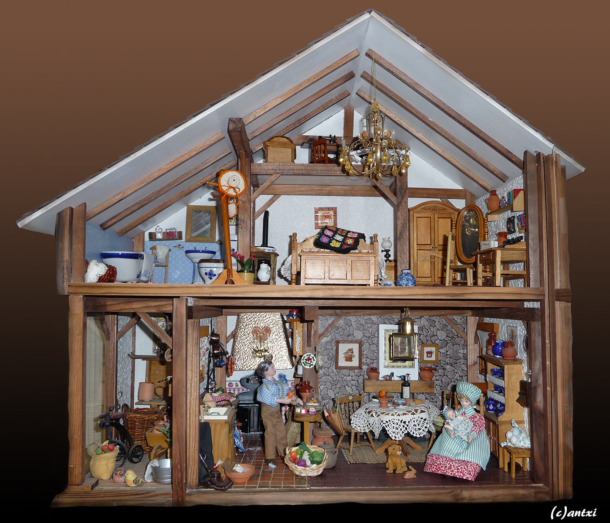
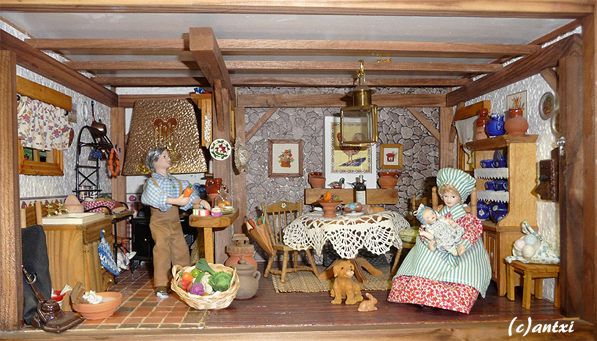
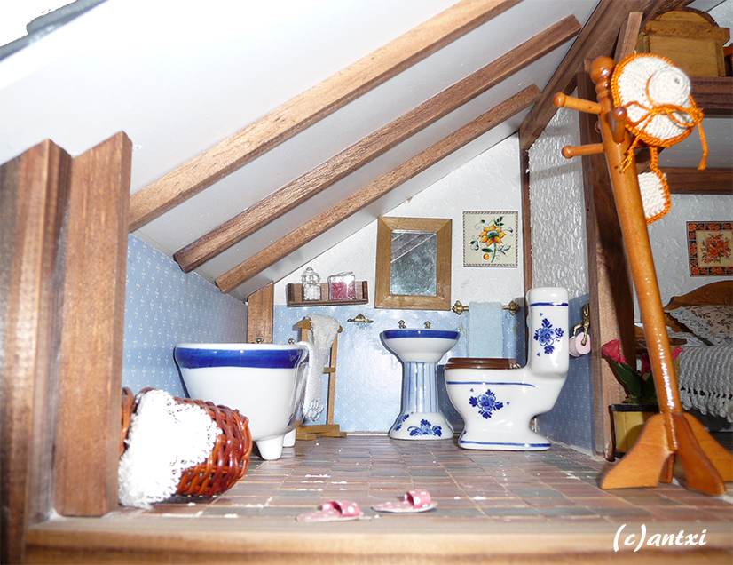
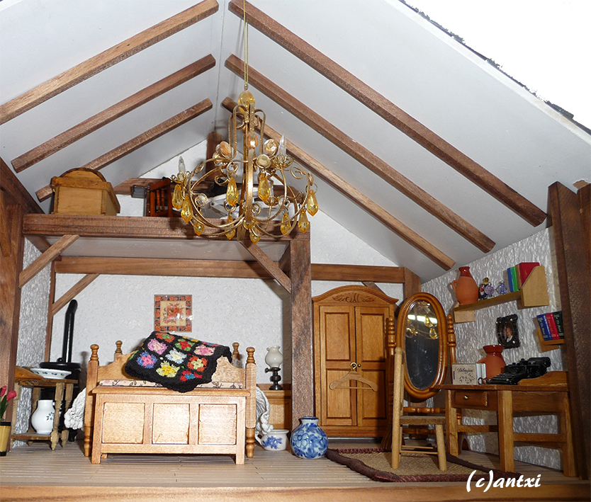
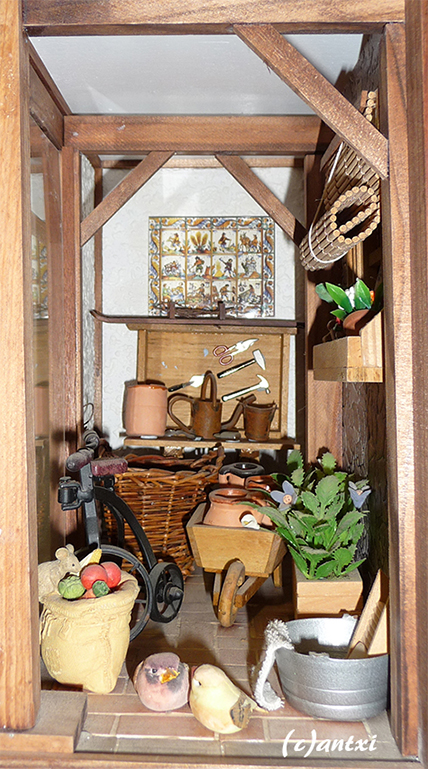

Explora cada habitación de la casa de muñecas para saber más de ella.

×

En esta habitación vemos a los muñecos. Están vestidos por Silvia con ropa hecha a mano. Otras cosas que mejoramos fueron las cortinas y la decoración de la pared de atrás donde se ven cuadros a punto de cruz.
Un detalle gracioso es la alfombra que solía ser la envoltura de un queso.
×

El baño mantiene los muebles originales del kit, excepto el sombrero y el bolso en el perchero, están hechos a mano a crochet.
×

Hay varias piezas hechas a crochet por Silvia en esta habitación, como la manta encima de la cama o la colcha.
Detalle interesante, la primera cosa que compramos online para nuestras casas de muñecas es el jarrón azul al pie de la cama.
×

La pequeña zona de fuera no la hemos tocado mucho, a excepción de los pajarillos que pusimos para dar más ambiente rústico.